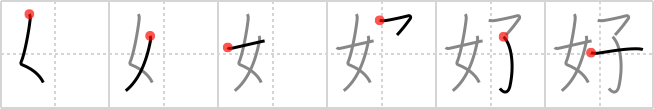

好
← →
fond

Reading:
On-Yomi: コウ — Kun-Yomi: この.む、す.く、よ.い、い.い
Heisig story:
The phrase "to be fond of someone" has a natural gentleness about it, and lends a tenderness to the sense of touching by giving us the related term "to fondle." The character likens it to a woman fondling her child.
Koohii stories:
1) [snozle] 8-10-2006(182): A woman is fond of her child.
2) [Christine_Tham] 23-7-2007(13): Women are fond of children.
3) [bakamono] 20-8-2007(7): If you are fond of a woman, she will make you a child.
4) [geisel] 11-11-2006(7): Your wife and child: the thing you are most fond of.
5) [carperhe1] 16-7-2008(5): There is no fondness greater than what a woman feels for her child.